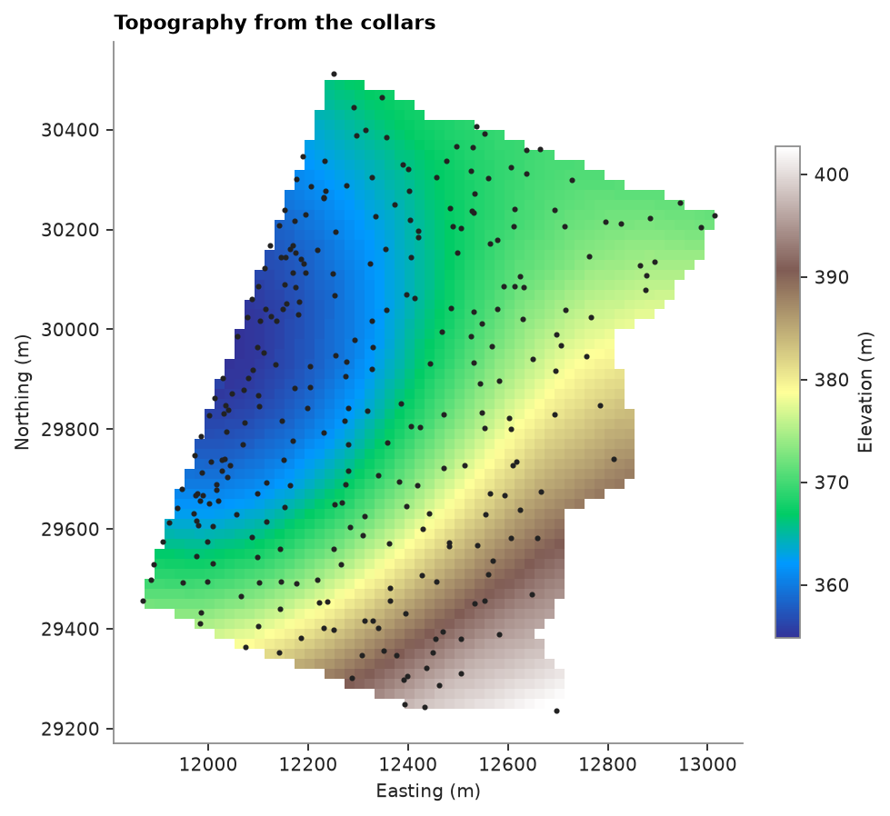
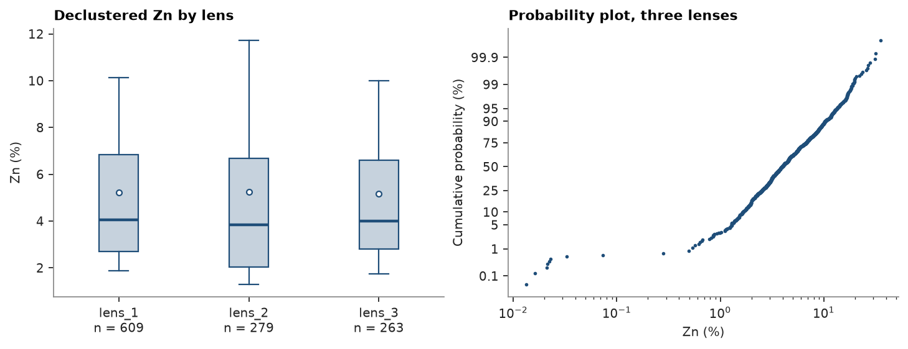
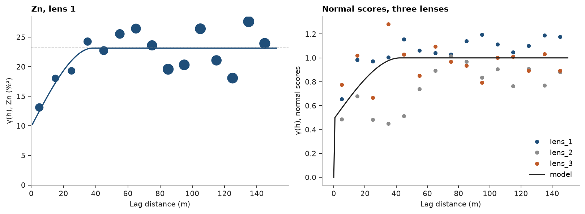
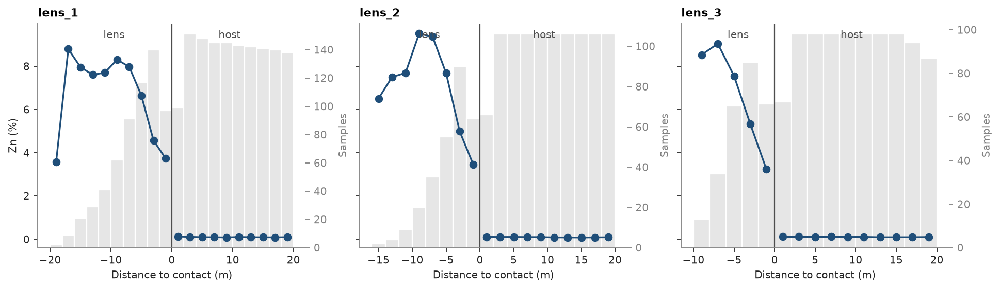
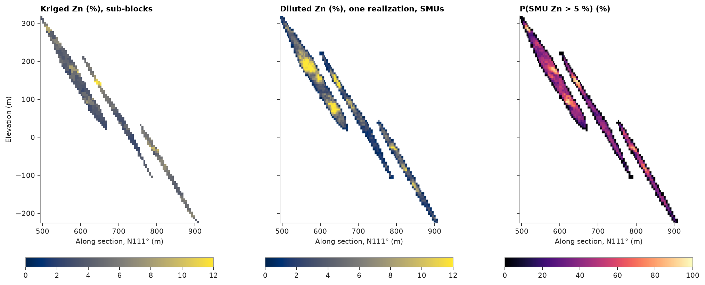
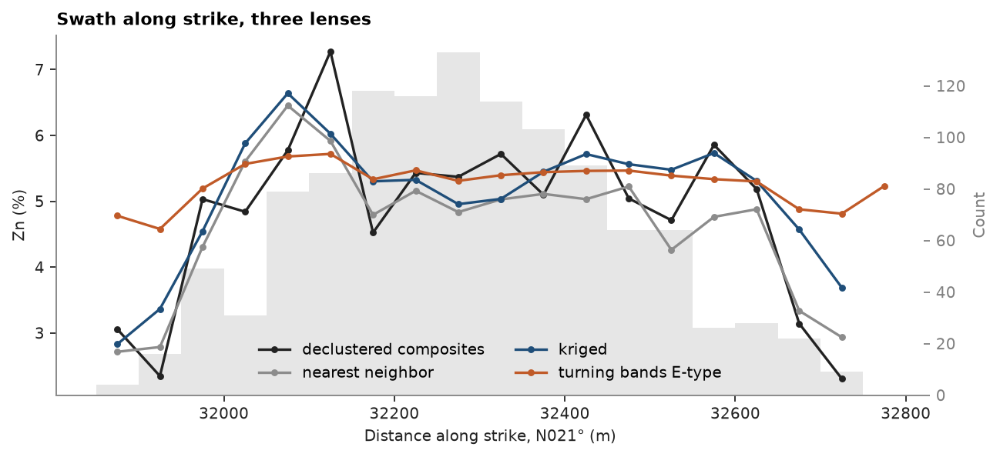
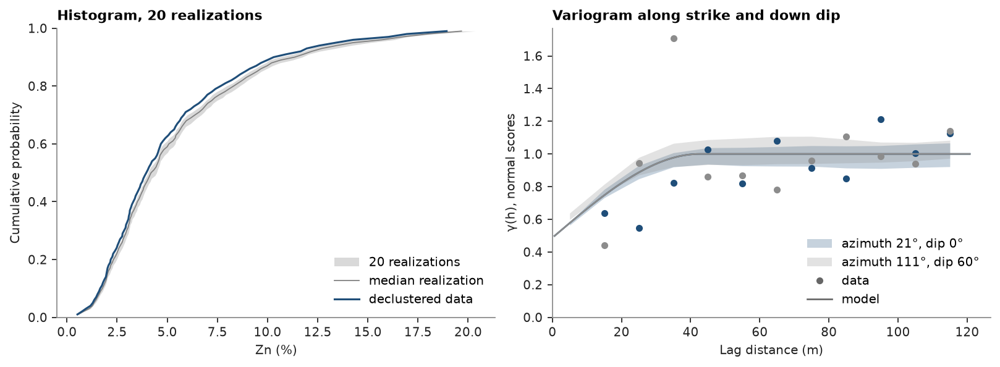
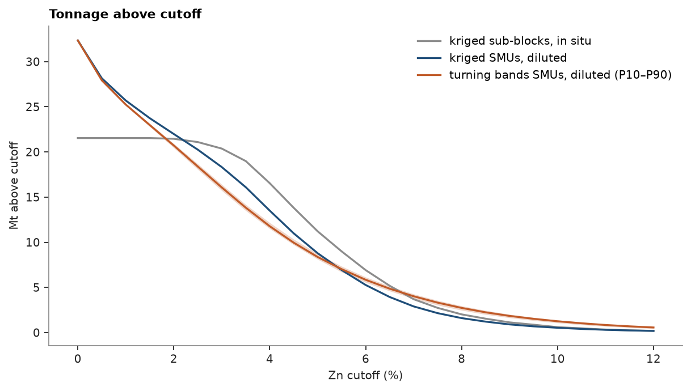

Note
Click here to download the full example code
From drill holes to a 3D model¶

- 1. Samples and support
- 2. Describing data
- 3. Spatial continuity
- 4. Kriging
- 5. Simulation
- 6. Checking a model
Three dipping zinc lenses, 289 drill holes and one notebook. You load the holes, composite them inside each lens, build a sub-blocked model and a sparse grid of mining blocks below the ground, estimate and simulate zinc, check both against the data, and look at the result in 3D. Each step takes a cell or two and links to the chapter or example that covers it in depth.
import sys
from pathlib import Path
HERE = Path(__file__).parent if "__file__" in globals() else Path.cwd()
sys.path.insert(0, str(HERE.parents[1] / "examples"))
import time
import boitata as bt
import matplotlib.pyplot as plt
import numpy as np
from common import ACCENT, GRAY, HIGHLIGHT, INK, LIGHT, map_axes, save, show
Drill holes and topography¶
The stacked sulphide lenses ship with collar, survey and assay tables, a wireframe per lens, and nothing else.
Drillholes desurveys the holes. The collars sample the ground, so topography triangulates them into a surface
and flags any collar that sits off the surface through its neighbors
(topography).
data = bt.datasets.stacked_sulphide_lenses()
holes = bt.Drillholes(data["collars"], data["surveys"], data["assays"])
collars = bt.PointSet.from_table(data["collars"], z="Z")
ground = bt.topography(collars, cell=20.0)
print(f"{len(holes)} holes, {len(data['assays']):,} assays, {ground.flagged.sum()} collars flagged")
fig, ax = plt.subplots(figsize=(6, 5.5), layout="constrained")
bt.plot.section(ground.grid, "z", axis="z", ax=ax, cmap="terrain", colorbar=False)
fig.colorbar(ax.collections[0], ax=ax, shrink=0.7, label="Elevation (m)")
ax.scatter(*collars.coords[:, :2].T, s=3, color=INK)
map_axes(ax, "Topography from the collars")
save(fig, "topography")

Out:
289 holes, 16,995 assays, 12 collars flagged
Composites inside each lens¶
Each assay takes the name of the lens around its midpoint, or host. Compositing to 2 m gives every sample the
same support, and domain="LENS" stops a composite at a lens contact, so no composite mixes ore with host rock
(compositing).
lenses = {name: data[name] for name in ("lens_1", "lens_2", "lens_3")}
samples = holes.samples()
lens = np.full(len(samples), "host", dtype=object)
for name, mesh in lenses.items():
lens[mesh.contains(samples.coords)] = name
holes = bt.Drillholes(data["collars"], data["surveys"], samples.with_column("LENS", list(lens)).attributes)
composites = holes.composite(2.0, ["ZN_PCT", "DENSITY"], domain="LENS", residual="merge")
names = np.array(composites["LENS"], dtype=object)
ore = composites.filter(names != "host")
ore_names = names[names != "host"]
print(f"{len(composites):,} composites of 2 m, {len(ore):,} inside a lens")
Out:
13,259 composites of 2 m, 1,151 inside a lens
A sub-blocked model¶
The lenses dip 60° to the east-southeast, so the model's parent blocks of 10 m are rotated with them. from_meshes
splits each parent that a wireframe cuts into 2.5 m sub-blocks and keeps only blocks inside a lens. The model's
volume matches the wireframes'
(sub-blocks).
rotation = (22.5, 0.0, 55.0)
frame = bt.BlockModel.from_extents(*lenses.values(), size=(10, 10, 10), buffer=10, rotation=rotation)
blocks = bt.BlockModel.from_meshes(
frame.origin,
(10, 10, 10),
frame.count,
[(mesh, "inside", name) for name, mesh in lenses.items()],
4,
rotation=rotation,
column="LENS",
)
block_lens = np.array(blocks["LENS"], dtype=object)
for name, mesh in lenses.items():
inside = block_lens == name
print(
f"{name}: {inside.sum():,} blocks, {blocks.volumes[inside].sum() / 1e6:.2f} Mm³ "
f"for a {mesh.volume / 1e6:.2f} Mm³ wireframe"
)
Out:
lens_1: 9,882 blocks, 2.79 Mm³ for a 2.79 Mm³ wireframe
lens_2: 9,085 blocks, 1.90 Mm³ for a 1.90 Mm³ wireframe
lens_3: 7,951 blocks, 1.66 Mm³ for a 1.65 Mm³ wireframe
Exploratory analysis¶
The holes cluster where the lenses are rich, so the plain mean overstates zinc. Cell declustering weights each lens's composites on their own (declustering).
weights = np.zeros(len(ore))
for name in lenses:
inside = ore_names == name
declustering = bt.cell_declustering(
ore.coords[inside], ore["ZN_PCT"][inside], sizes=np.arange(10, 105, 5)
)
weights[inside] = declustering.weights / declustering.weights.mean()
print(
f"{name}: {inside.sum()} composites, mean {ore['ZN_PCT'][inside].mean():.2f} % Zn, "
f"declustered {declustering.mean:.2f} %"
)
ore = ore.with_column("weight", weights)
fig, (a, b) = plt.subplots(1, 2, figsize=(9, 3.4), layout="constrained")
bt.plot.boxplot("ZN_PCT", list(ore_names), weights="weight", data=ore, ax=a)
a.set(ylabel="Zn (%)", title="Declustered Zn by lens")
bt.plot.probability("ZN_PCT", weights="weight", data=ore, log=True, ax=b, color=ACCENT, ms=3)
b.set(xlabel="Zn (%)", title="Probability plot, three lenses")
save(fig, "statistics")

Out:
lens_1: 609 composites, mean 6.26 % Zn, declustered 5.22 %
lens_2: 279 composites, mean 6.17 % Zn, declustered 5.24 %
lens_3: 263 composites, mean 5.99 % Zn, declustered 5.17 %
Declustering lowers each lens mean by 0.8 to 1.0 % Zn, to about 5.2 %. The three lenses share one distribution, and the probability plot shows no break in the upper tail that would call for capping.
Variography¶
Lens 1 holds half the composites, so its variogram stands for all three. Kriging uses the variogram of the grades; turning bands simulates normal scores and needs theirs, rescaled to a unit sill (spatial continuity).
one = ore.filter(ore_names == "lens_1")
grades = bt.experimental_variogram(one, "ZN_PCT", 10.0, 150.0)
variogram = grades.fit("spherical")
scores = np.zeros(len(ore))
for name in lenses:
inside = ore_names == name
scores[inside] = bt.NormalScore().fit_transform(ore["ZN_PCT"][inside], weights=weights[inside])
fitted = bt.experimental_variogram(one, scores[ore_names == "lens_1"], 10.0, 150.0).fit("spherical")
gaussian = bt.Variogram(
[(s.model, s.sill / fitted.sill, s.range) for s in fitted.structures], nugget=fitted.nugget / fitted.sill
)
for label, model in (("Zn", variogram), ("normal scores", gaussian)):
s = model.structures[0]
print(f"{label}: nugget {model.nugget:.2f}, spherical sill {s.sill:.2f}, range {s.range:.0f} m")
fig, (a, b) = plt.subplots(1, 2, figsize=(10, 3.6), layout="constrained")
bt.plot.variogram(grades, variogram=variogram, ax=a, color=ACCENT)
a.set(xlabel="Lag distance (m)", ylabel="γ(h), Zn (%²)", title="Zn, lens 1")
for name, color in zip(lenses, (ACCENT, GRAY, HIGHLIGHT), strict=True):
inside = ore_names == name
experimental = bt.experimental_variogram(ore.coords[inside], scores[inside], 10.0, 150.0)
b.plot(experimental.lags, experimental.gammas, "o", color=color, ms=4, label=name)
h = np.linspace(0, 150, 200)
b.plot(h, gaussian.gamma(h), color=INK, lw=1.4, label="model")
b.legend(loc="lower right")
b.set(xlabel="Lag distance (m)", ylabel="γ(h), normal scores", title="Normal scores, three lenses")
save(fig, "variogram")

Out:
Zn: nugget 9.90, spherical sill 13.27, range 38 m
normal scores: nugget 0.49, spherical sill 0.51, range 43 m
Half the variance is nugget, and zinc loses its correlation beyond about 40 m. The normal scores of lenses 2 and 3 scatter around the same model.
Domaining¶
Kriging each lens from its own composites assumes the grade drops sharply at the lens contact. contact checks
that assumption: it averages zinc by distance to the contact, down every hole that crosses one
(contact analysis).
fig, axes = plt.subplots(1, 3, figsize=(12, 3.4), layout="constrained", sharey=True)
for ax, name in zip(axes, lenses, strict=True):
profile = bt.contact(
composites,
"ZN_PCT",
domain_column="LENS",
holes="HOLE_ID",
inside=name,
outside="host",
max_distance=20.0,
bin=2.0,
)
bt.plot.contact(profile, labels=("lens", "host"), ax=ax, color=ACCENT)
ax.set(title=name, xlabel="Distance to contact (m)", ylabel="")
axes[0].set_ylabel("Zn (%)")
save(fig, "contacts")
host = composites["ZN_PCT"][names == "host"]
print(f"host rock: {np.nanmean(host):.2f} % Zn over {np.isfinite(host).sum():,} composites")

Out:
host rock: 0.07 % Zn over 12,108 composites
Zinc reaches 8 to 10 % inside each lens and drops toward the contact; across it, the host averages 0.07 %. The contacts are hard, so host composites must not inform the lenses, and each lens gets its own estimate.
A sparse grid of mining blocks¶
Kriged sub-blocks give the metal in place. A mine digs fixed blocks, the selective mining units (SMUs), here
cubes of 5 m on a regular grid that runs from below the lenses up to the highest collar. You drop the cells above
the collar topography and keep every cell a lens touches; Mesh.proportion gives the share of each cell inside
each lens. The collars give no surface outside the drilled outline, so cells there stay. The masked model stores
the kept rows alone
(block models from extents).
summit = [[*lenses["lens_1"].vertices.mean(axis=0)[:2], collars.coords[:, 2].max()]]
grid = bt.BlockModel.from_extents(*lenses.values(), summit, size=(5, 5, 5), buffer=5, snap=True)
centers = grid.centroids
below = ~(centers[:, 2] >= ground.grid["z"][ground.grid.row_at(centers[:, :2])])
cells = grid.mask(below)
shares = np.array([mesh.proportion(cells) for mesh in lenses.values()])
touched = shares.sum(axis=0) > 0
shares = shares[:, touched]
smus = cells.mask(touched).with_columns(
{
"LENS": list(np.array(list(lenses))[shares.argmax(axis=0)]),
"fraction": np.minimum(shares.sum(axis=0), 1.0),
}
)
inside = (smus["fraction"] * smus.volumes).sum()
solid = sum(mesh.volume for mesh in lenses.values())
print(f"{len(grid):,} cells in the grid, {below.sum():,} below ground, {len(smus):,} touch a lens")
print(
f"{np.mean(smus['fraction'] == 1):.0%} of them lie wholly inside; lens volume {inside / 1e6:.2f} Mm³ of {solid / 1e6:.2f}"
)
assert abs(inside / solid - 1) < 0.01
Out:
2,556,450 cells in the grid, 2,413,188 below ground, 80,102 touch a lens
31% of them lie wholly inside; lens volume 6.34 Mm³ of 6.34
Two thirds of the SMUs only graze a lens and carry their share; together they hold the lens volume to within 1 %.
Kriging¶
Ordinary kriging runs in two search passes, on the sub-blocks and on the SMUs. The first wants six composites
within the variogram range, at most two per hole. The second reaches every remaining block: its radius is the
largest distance from any block to the nearest composite of its lens. domain_column="LENS" keeps each lens to its
own composites. Density, measured on fewer samples, is kriged the same way, so tonnes follow the rock
(kriging).
reach = variogram.structures[0].range
closest = bt.OrdinaryKriging(variogram, bt.Search(1000, max_samples=1)).fit(
ore, "ZN_PCT", domain_column="LENS"
)
far = max(
np.max(closest.predict(m, diagnostics=True, domain_column="LENS")["mean_distance"])
for m in (blocks, smus)
)
passes = [
bt.Search(reach, max_samples=12, min_samples=6, max_per_hole=2),
bt.Search(10 * np.ceil(far / 10), max_samples=12, max_per_hole=2),
]
print(f"pass 2 radius {passes[1].radius:.0f} m")
zn = bt.OrdinaryKriging(variogram, passes).fit(ore, "ZN_PCT", holes="HOLE_ID", domain_column="LENS")
measured = ore.filter(np.isfinite(ore["DENSITY"]))
density = bt.OrdinaryKriging(variogram, passes).fit(
measured, "DENSITY", holes="HOLE_ID", domain_column="LENS"
)
kriged = zn.predict(blocks, diagnostics=True, domain_column="LENS")
blocks = blocks.with_columns(
{"zn": kriged["value"], "density": density.predict(blocks, domain_column="LENS"), "pass": kriged["pass"]}
)
smus = smus.with_columns(
{"zn": zn.predict(smus, domain_column="LENS"), "density": density.predict(smus, domain_column="LENS")}
)
for model in (blocks, smus):
assert np.isfinite(model["zn"]).all() and np.isfinite(model["density"]).all()
for p in (1, 2):
print(f"pass {p}: {np.mean(kriged['pass'] == p):.0%} of sub-blocks")
Out:
pass 2 radius 100 m
pass 1: 8% of sub-blocks
pass 2: 92% of sub-blocks
Every sub-block and every SMU gets a grade and a density.
A mine digs a whole SMU, host rock included, so each SMU's grade is diluted: the lens grade on its lens share, the host composites' mean grade and density on the rest.
host = composites.filter(names == "host")
host_zn, host_density = np.nanmean(host["ZN_PCT"]), np.nanmean(host["DENSITY"])
f = smus["fraction"]
smus = smus.with_columns(
{
"zn_diluted": f * smus["zn"] + (1 - f) * host_zn,
"density_diluted": f * smus["density"] + (1 - f) * host_density,
}
)
print(f"host: {host_zn:.2f} % Zn, {host_density:.2f} t/m³")
Out:
host: 0.07 % Zn, 2.95 t/m³
Turning bands¶
A kriged SMU is too smooth to say how much ore lies above a cutoff. Turning bands draws 50 realizations of zinc,
each lens from its own data, on eight nodes per SMU, and blocks= averages each realization over its SMU. Each
realization is then diluted like the kriged grades, and the probability that an SMU exceeds 5 % Zn counts the
realizations above it (turning bands,
simulation).
nodes = smus.discretize(2)
parent = np.asarray(nodes["block"], dtype=np.int64)
nodes = nodes.with_column("LENS", list(np.asarray(smus["LENS"], dtype=object)[parent]))
tb = bt.TurningBands(gaussian, search=passes[1]).fit(
ore, "ZN_PCT", weights="weight", holes="HOLE_ID", domain_column="LENS"
)
start = time.perf_counter()
summary = tb.simulate(nodes, n=50, seed=7, blocks=smus, domain_column="LENS", keep=True)
print(f"{summary.n} realizations on {len(nodes):,} nodes in {time.perf_counter() - start:.0f} s")
realizations = f * summary.realizations + (1 - f) * host_zn
smus = smus.with_columns(
{
"etype": summary.mean,
"realization": realizations[0],
"p_above_5": 100 * np.mean(realizations > 5.0, axis=0),
}
)
Out:
50 realizations on 640,816 nodes in 3 s
A dip section across the three lenses compares the kriged sub-blocks with one diluted realization on the SMUs and the probability, in percent, that an SMU exceeds 5 % Zn.
center = np.mean([mesh.vertices.mean(axis=0) for mesh in lenses.values()], axis=0)
plane = (tuple(center), 111.0, 90.0)
panels = [
(blocks, "zn", "Kriged Zn (%), sub-blocks", {"vmin": 0, "vmax": 12}),
(smus, "realization", "Diluted Zn (%), one realization, SMUs", {"vmin": 0, "vmax": 12}),
(smus, "p_above_5", "P(SMU Zn > 5 %) (%)", {"vmin": 0, "vmax": 100, "cmap": "magma"}),
]
fig, axes = plt.subplots(1, 3, figsize=(13, 5), layout="constrained", sharey=True)
for ax, (model, column, title, style) in zip(axes, panels, strict=True):
bt.plot.section(model, column, plane=plane, ax=ax, colorbar=False, **style)
fig.colorbar(ax.images[0], ax=ax, orientation="horizontal", shrink=0.8)
ax.set(title=title, aspect="equal", xlim=axes[0].get_xlim(), ylim=axes[0].get_ylim())
ax.set(xlabel="Along section, N111° (m)", ylabel="")
axes[0].set_ylabel("Elevation (m)")
save(fig, "sections")

Validation¶
An estimate should keep the declustered mean of its data. Nearest neighbor, which copies the closest composite into each block, is a second unbiased reference, and the E-type, the mean of the undiluted realizations weighted by each SMU's lens volume, a third. A swath plot follows all four along strike (checking a model).
nearest = bt.NearestNeighbor(bt.Search(passes[1].radius, max_samples=1)).fit(
ore, "ZN_PCT", domain_column="LENS"
)
blocks = blocks.with_column("nn", nearest.predict(blocks, domain_column="LENS"))
smu_names = np.asarray(smus["LENS"], dtype=object)
lens_volume = f * smus.volumes
for name in lenses:
inside = block_lens == name
bias = bt.global_bias(
blocks["zn"][inside],
ore["ZN_PCT"][ore_names == name],
weights=blocks.volumes[inside],
data_weights=weights[ore_names == name],
)
nn = np.average(blocks["nn"][inside], weights=blocks.volumes[inside])
etype = np.average(smus["etype"][smu_names == name], weights=lens_volume[smu_names == name])
print(
f"{name}: declustered {bias['data_mean']:.2f}, kriged {bias['estimate_mean']:.2f}, "
f"nearest neighbor {nn:.2f}, E-type {etype:.2f} % Zn"
)
fig, ax = plt.subplots(figsize=(8, 3.6), layout="constrained")
bt.plot.swath(
[
bt.swath(ore, "ZN_PCT", 50.0, azimuth=21.0, weights="weight"),
bt.swath(blocks, "nn", 50.0, azimuth=21.0, weights=blocks.volumes),
bt.swath(blocks, "zn", 50.0, azimuth=21.0, weights=blocks.volumes),
bt.swath(smus, "etype", 50.0, azimuth=21.0, weights=lens_volume),
],
labels=["declustered composites", "nearest neighbor", "kriged", "turning bands E-type"],
ax=ax,
)
for line, color in zip(ax.lines, (INK, GRAY, ACCENT, HIGHLIGHT), strict=True):
line.set_color(color)
ax.legend(loc="lower center", ncol=2)
ax.set(xlabel="Distance along strike, N021° (m)", ylabel="Zn (%)", title="Swath along strike, three lenses")
save(fig, "swath")

Out:
lens_1: declustered 5.22, kriged 5.47, nearest neighbor 5.49, E-type 5.47 % Zn
lens_2: declustered 5.24, kriged 5.39, nearest neighbor 4.85, E-type 5.41 % Zn
lens_3: declustered 5.17, kriged 5.31, nearest neighbor 4.47, E-type 5.32 % Zn
Kriging and the E-type sit within 0.25 % Zn of the declustered composites in every lens. Nearest neighbor runs 0.4 to 0.7 % lower in lenses 2 and 3, the two with the fewest composites.
Simulated values must also reproduce the histogram and the variogram of the data. check_realizations compares
20 more realizations, drawn at the centers of the SMUs wholly inside a lens so that their support matches the
composites', with the declustered data along strike and down dip
(realization checks).
cores = smus.mask(f == 1)
points = tb.simulate(cores, n=20, seed=8, domain_column="LENS", keep=True)
check = bt.check_realizations(
cores,
points,
ore,
"ZN_PCT",
weights="weight",
variogram=gaussian,
lag=10.0,
max_lag=120.0,
directions=[(21.0, 0.0), (111.0, 60.0)],
)
fig, (a, b) = plt.subplots(1, 2, figsize=(10, 3.6), layout="constrained")
bt.plot.histogram_reproduction(check, ax=a)
a.set(xlabel="Zn (%)", title="Histogram, 20 realizations")
bt.plot.variogram_reproduction(check, ax=b)
b.set(xlabel="Lag distance (m)", ylabel="γ(h), normal scores", title="Variogram along strike and down dip")
save(fig, "reproduction")

Grade and tonnage¶
Tonnes are volume times density. The in-situ curve comes from the kriged sub-blocks; the two SMU curves add dilution and the 5 m selectivity. Kriged SMUs vary less than real ones, so kriging predicts more tonnes at low cutoffs and fewer at high cutoffs than the mine can deliver. The simulated curve carries its own uncertainty, the band between the 10th and 90th percentile realizations (recoverable resources).
cutoffs = np.arange(0.0, 12.5, 0.5)
tonnes = smus.volumes * smus["density_diluted"]
curves = {
"kriged sub-blocks, in situ": bt.grade_tonnage(
"zn", cutoffs, weights=blocks.volumes, density="density", data=blocks
),
"kriged SMUs, diluted": bt.grade_tonnage(smus["zn_diluted"], cutoffs, weights=tonnes),
}
per_realization = np.array(
[
[(tonnes * (r >= c)).sum() for c in cutoffs] + [(tonnes * r * (r >= c)).sum() for c in cutoffs]
for r in realizations
]
)
p10, p50, p90 = np.quantile(per_realization, [0.1, 0.5, 0.9], axis=0)
fig, ax = plt.subplots(figsize=(7.5, 4.2), layout="constrained")
for (label, table), color in zip(curves.items(), (GRAY, ACCENT), strict=True):
ax.plot(table["cutoff"], np.asarray(table["tonnage"]) / 1e6, color=color, label=label)
n = len(cutoffs)
ax.fill_between(cutoffs, p10[:n] / 1e6, p90[:n] / 1e6, color=HIGHLIGHT, alpha=0.25, lw=0)
ax.plot(cutoffs, p50[:n] / 1e6, color=HIGHLIGHT, label="turning bands SMUs, diluted (P10–P90)")
ax.set(xlabel="Zn cutoff (%)", ylabel="Mt above cutoff", title="Tonnage above cutoff")
ax.legend()
save(fig, "grade_tonnage")
at = int(np.flatnonzero(cutoffs == 5.0)[0])
for label, table in curves.items():
print(f"{label}, above 5 % Zn: {table['tonnage'][at] / 1e6:.1f} Mt at {table['mean_grade'][at]:.2f} % Zn")
for p, row in (("P10", p10), ("P50", p50), ("P90", p90)):
print(f"simulated {p}, above 5 % Zn: {row[at] / 1e6:.1f} Mt at {row[n + at] / row[at]:.2f} % Zn")

Out:
kriged sub-blocks, in situ, above 5 % Zn: 11.2 Mt at 6.83 % Zn
kriged SMUs, diluted, above 5 % Zn: 8.8 Mt at 6.83 % Zn
simulated P10, above 5 % Zn: 8.1 Mt at 7.49 % Zn
simulated P50, above 5 % Zn: 8.4 Mt at 7.61 % Zn
simulated P90, above 5 % Zn: 8.7 Mt at 7.71 % Zn
Above 5 % Zn the sub-blocks hold 11.2 Mt at 6.83 % in situ. Mined as whole SMUs, kriging reports 8.8 Mt at 6.83 % and the realizations 8.1 to 8.7 Mt at 7.5 to 7.7 %: dilution costs about a fifth of the ore, and the simulated SMUs, which vary as much as real ones, select less of it at a higher grade.
In 3D¶
bt.plot3d draws containers in a viewer that runs in the browser, as a notebook widget or a standalone page. The
scene holds the collar topography, the drill holes over the lenses, the lens surfaces, the kriged sub-blocks
(hidden at first) and every SMU, colored by its probability above 5 % Zn. A filter keeps the SMUs with a
probability of 1 % or more, so the shell of SMUs that only graze a lens does not hide the cores
(3D views,
filtering block models,
interactive sections):
- drag to turn, right-drag to pan, the wheel zooms;
Rfits the view,Plooks down in plan; - the panel at the top right shows or hides each layer, and its settings switch the representation, the colors
and the filter;
Hhides the panel,Tswitches the theme, the header button goes fullscreen; - Shift-drag cuts a straight section;
Sdraws one in plan: click to add vertices, hold Shift to lock a segment to a multiple of 45°, Enter cuts. Shift+wheel sets the section's width,Uunfolds it,Xclears it; - click a block, a hole or a surface to inspect its values;
?lists every key.
low = np.min([mesh.bounds[0] for mesh in lenses.values()], axis=0) - 40
high = np.max([mesh.bounds[1] for mesh in lenses.values()], axis=0) + 40
xy = np.c_[data["collars"]["X"], data["collars"]["Y"]]
over = data["collars"].filter(np.all((xy > low[:2]) & (xy < high[:2]), axis=1))
scene = bt.plot3d.Scene()
scene.add(ground.mesh, name="topography", color=LIGHT, opacity=0.4)
scene.add(bt.Drillholes(over, data["surveys"]), name="drill holes", color=GRAY, line_width=1, opacity=0.6)
for name, mesh in lenses.items():
scene.add(mesh, name=name.replace("_", " "), color=LIGHT, opacity=0.2)
scene.add(blocks, "zn", name="kriged sub-blocks", clim=(0, 10), label="Zn (%)", visible=False)
scene.add(
smus,
"p_above_5",
name="SMUs",
cmap="magma",
clim=(0, 100),
label="P(SMU Zn > 5 %) (%)",
filter={"p_above_5": (1, None)},
)
scene.view(azimuth=305, dip=25)
show(scene, "scene", "The SMUs colored by their probability above 5 % Zn, with the holes and lenses")
Where next¶
The learn chapters explain each step from first principles, and the case study on the same lenses goes on to classify the resource.
Total running time of the script: ( 0 minutes 28.988 seconds)
Download Python source code: learn_00.py